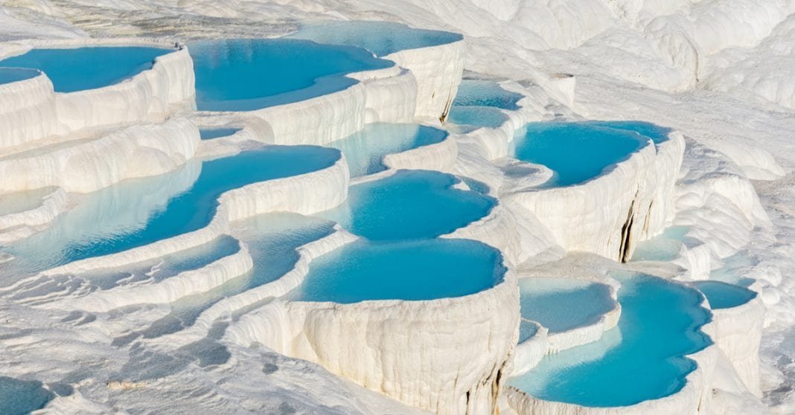

Şehir Hakkında
Nüfus: Yaklaşık 1.050.000
Denizli, Türkiye'nin bir sanayi ve turizm merkezidir.
Denizli denince akla gelen ilk yer, UNESCO Dünya Miras Listesi'nde yer alan Pamukkale Travertenleridir. Kalsiyum oksitli termal suların oluşturduğu bu beyaz basamaklar, dünyanın her yerinden turist çeker. Hemen yanında bulunan Hierapolis Antik Kenti, Roma döneminden kalan tiyatrosu ve nekropolü ile tarih meraklıları için bir hazinedir.
Şehrin Gururu: Denizlispor
Denizlispor Kulübü
- Renkler: Yeşil - Siyah
- Lakap: Horozlar
- Denizlispor, Süper Lig'de en uzun süre mücadele eden Anadolu takımlarından biridir.
- 2006 Yılı "Efsanevi" Maç: Süper Lig tarihinin en unutulmaz maçlarından biri olan ve Fenerbahçe'nin şampiyonluğu kaybettiği 1-1'lik maç Denizli'de oynanmıştır. Denizlispor o maçla ligde kalmayı başarmıştır.